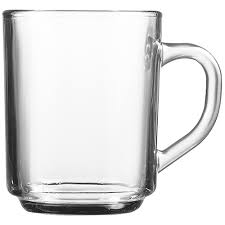

Glass Cups
 This cup is incredibly useful, and sustainable for the environment, as you can use the glass over and over again for decades, and it'll be completely fine.
l Doing so will cause you no ill will, provided that you wash it, to avoid ingesting diseases and other viruses and germs that one wouldn't want to ingest.
This is opposed to something like a plastic cup, which you can only use once, and then it falls apart in your hands.
The only thing that the glass cup isn't immune to is being dropped, and that can easily be avoided by a simple phenomenon known as 'not being clumsy',
so it's plain to see that when you wish to drink from cups, use a glass cup, not a plastic cup.
i fired my writer after ts 😭😭😭⬆️⬆️⬆️

pretty good design, its kind of the goat of glass cups and
1000000% better than any dirty gross plastic cup

banging cup, very easy to use, very human
and quite a nice comfortable holding position (can confirm)

definitely one of the more basic glass cups but still incredible,
like jonesy from fortnite, still the goat.
quite nice, good design and good grip.